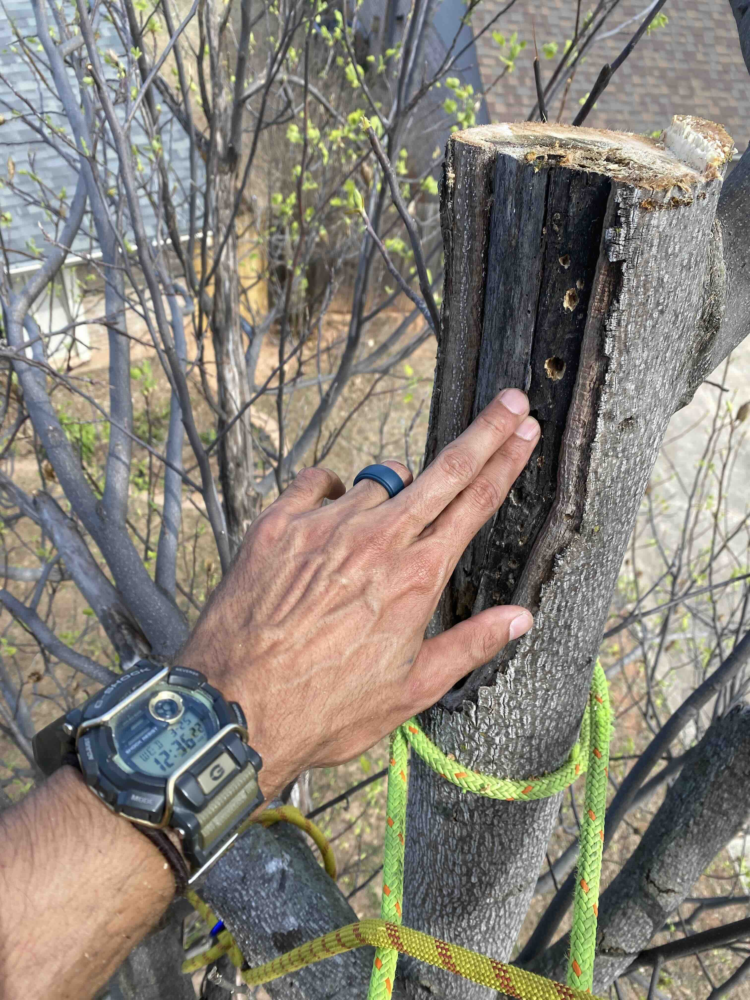

Why Abundant Life begins with observation rather than a chainsaw—
and why good tree care means understanding the tree, the land,
and the people who live there.
August 28, 2026 · Christian Castillo
Some of the most important information about a tree cannot be understood
from the ground. Good recommendations begin with looking closely enough
to understand what is actually happening.
Observe first
Understand the tree, the site, and the real problem before deciding
what work should be performed.
Preserve what has value
Removal is sometimes necessary, but it is an option—not the
predetermined outcome of every tree call.
Leave it better
Judge the work by the condition of the tree and property afterward,
not simply by how much material came down.
There is a simple question behind nearly every decision we make on a
property: What will leave this land better than we found it?
Sometimes the answer is pruning a tree.
Sometimes it is removing one.
Sometimes it is correcting a problem at the roots that began years
before we arrived.
And sometimes the best thing we can do is explain what we see,
recommend leaving the tree alone, and walk away without performing
any work at all.
That distinction matters.
We don't begin with a chainsaw
When someone calls a tree company, there is usually an obvious reason.
A limb is hanging over the house. A tree looks unhealthy. Roots are
lifting something. Storm damage has changed the canopy. A tree has
grown much larger than anyone expected when it was planted twenty
years ago.
It is tempting to begin with the question:
What should we cut?
We prefer to begin one step earlier:
What is happening here?
A tree is not simply a trunk holding up branches. It is a living
organism interacting with soil, water, sunlight, microorganisms,
neighboring plants, structures, weather, and people.
A problem visible twenty feet above the ground may have begun six
inches below it.
Poor planting depth can affect a tree for years. Girdling roots can
gradually compromise the trunk. Repeated heading cuts can create
structural problems that become increasingly difficult to correct.
Soil compaction, drainage changes, construction, and improper mulching
can influence trees long before symptoms become obvious.
Good tree work begins with observation.
The saw comes later.
That sounds simple, but it changes the entire character of the work.

Inspection from within the crown can reveal relationships between
cavities, old wounds, live structure, and attachments that are difficult
or impossible to evaluate from the lawn.
Preservation when possible. Removal when necessary.
Trees are remarkably valuable things.
A mature tree may represent decades of growth that cannot simply be
replaced by installing another one.
That does not mean every tree should remain.
Dead, declining, structurally compromised, or badly situated trees can
become liabilities. Invasive vegetation can overwhelm more desirable
plant communities. Sometimes removing one tree improves the conditions
for everything growing around it.
The goal is not preservation at any cost.
Neither is it removal at every opportunity.
The goal is to understand the tree, the site, and the property owner's
objectives well enough to make a sound decision.
That might mean removing deadwood instead of removing the tree.
It might mean reducing a particular limb instead of indiscriminately
thinning the canopy.
It might mean exposing a buried root flare, correcting mulch, or
addressing competing vegetation.
And when removal really is the appropriate answer, we can say so with
more confidence because we did not begin with removal as the foregone
conclusion.
The property is one living system
Our name is Abundant Life Land & Tree for a reason.
Trees do not exist separately from the land beneath them.
That is where the combination of arboriculture and horticulture becomes
especially important.
We may arrive because of a maple and notice what is happening at its
root plate. We may be called about an overgrown area and recognize how
the vegetation is changing sunlight, access, habitat, and competition
across the property. We may remove a declining tree while also
considering what should occupy that space ten or twenty years from now.
That wider perspective changes the work.
We try to think beyond what the property should look like when the
trailer pulls away and consider what today's decisions will mean
years from now.
A good landscape should not merely survive our work.
It should have a better opportunity to thrive because of it.
Craft matters
There is another side to stewardship that is much less philosophical.
The work still has to be done well.
Tree work combines biology with ropes, saws, leverage, rigging,
machinery, gravity, and considerable amounts of stored energy.
Small decisions can have large consequences.
That is why we take the craft seriously.
We study trees. We study climbing. We study pruning. We study rigging
and work positioning. We study the failures we encounter in the field.
And we document unusual or instructive jobs so that what we learn on
one property can improve the decisions we make on the next.
These Field Notes are part of that process.
They are not meant to make ordinary tree work sound complicated.
They exist because trees actually are complicated, and we believe
property owners deserve to understand the reasoning behind
recommendations that may affect their land for decades.
What we are actually selling
The pile on the ground is not the product
A large brush pile can demonstrate effort, but it cannot tell you
whether the right decisions were made.
In mature-tree pruning, there are times when doing less requires more
judgment. There are times when the most valuable branch on the property
is the one that was carefully considered and left in place.
The same principle applies beyond the canopy. Existing materials may
be reusable. A root-zone problem may matter more than a cosmetic one.
A replacement tree may need to be chosen for the conditions it will
face twenty years from now rather than for how it looks on installation
day.
The product is the condition of the tree and property when we leave.
You should understand what you're paying for
A tree estimate should be more than a number at the bottom of a page.
If we recommend substantial work, we should be able to explain why.
What are we trying to accomplish?
What problem are we correcting?
What are we deliberately leaving alone?
What risks matter?
What might happen if nothing is done?
What will the property look like afterward?
Those questions are especially important because the most aggressive
intervention is not necessarily the best one.
There are circumstances where doing less requires more judgment.
There are circumstances where spending a little money correcting a
developing problem may prevent spending considerably more later.
And there are circumstances where the appropriate recommendation is
simply:
Leave it alone.
We want clients who value that kind of honesty, because long-term trust
is worth considerably more to us than maximizing a single invoice.
We want to know your property
The best work often happens after the first job.
Once we understand a property—its trees, problem areas, priorities,
and the people who live there—we can begin thinking beyond individual
service calls.
A dangerous tree can be addressed now.
Structural pruning can happen at the appropriate time.
Young trees can be trained before defects become major limbs.
Poor planting conditions can be corrected while correction is still
practical.
Replacement trees can be chosen because they belong in that particular
location, not simply because they happened to be available.
Over time, emergency decisions can give way to intentional stewardship.
That is the relationship we ultimately want to build.
Leave it better
We are still a small company.
That allows the person evaluating the tree to remain close to the
people actually performing the work. It allows unusual problems to
receive individual thought. It allows us to keep learning from the
properties entrusted to us rather than treating them simply as stops on
a production schedule.
We climb trees.
We run saws.
We haul brush.
We get covered in chips, dirt, and sweat like every other tree crew.
But those are means rather than the mission.
Understand what is growing.
Understand what the client needs.
Do the work carefully.
Leave the land better than we found it.
That is what we mean by
Abundant Life Land & Tree.
Christian works in arboriculture, horticulture, tree
assessment, landscape restoration, and land stewardship across
Edmond and the Oklahoma City metro. Field Notes document
practical observations from fieldwork, property assessments,
and the ongoing study of living landscapes.
Want someone to look at the whole problem before recommending the work?
Abundant Life works with property owners on tree assessment,
mature-tree pruning, removals, storm damage, planting concerns,
and long-term landscape stewardship throughout Edmond and the
Oklahoma City metro.